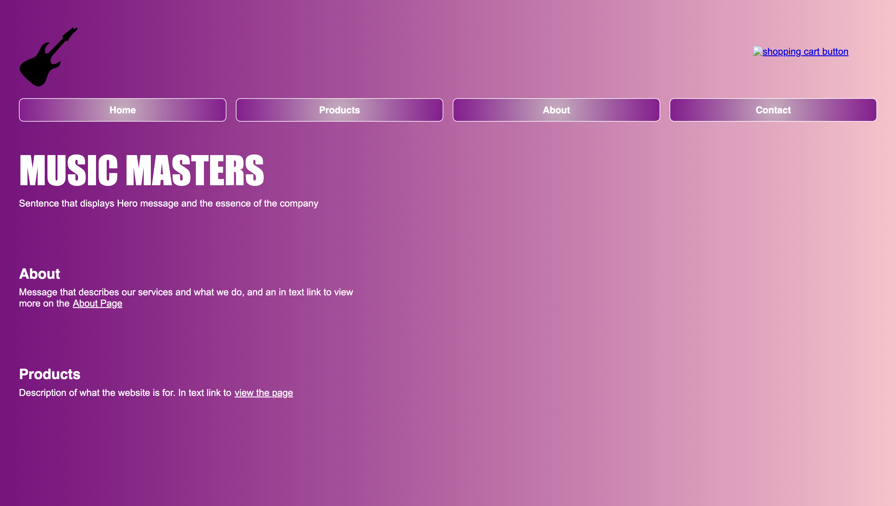
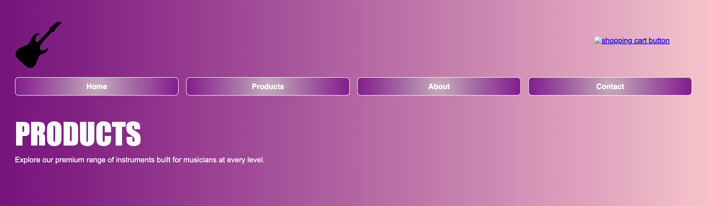
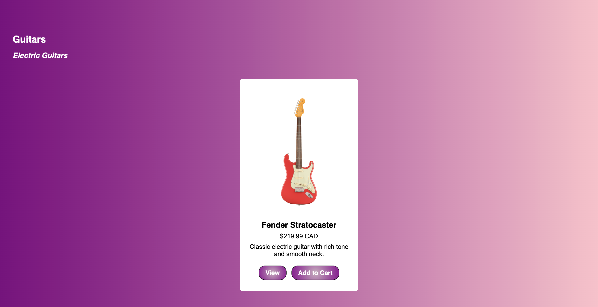

Music Masters is a fictional online guitar shop created for a Web Design and Development course project. Our goal was to build a responsive site using HTML, CSS, and JavaScript, offering a catalog of guitars and accessories. The site emphasizes user experience and product clarity.
Context, Skills, and Tools
Tools: Figma, HTML5, CSS3, JavaScript
Type: Academic project (IAT 339)
Date: June–July 2025
Team: Sam (myself), Muhammad Junaid
Role: UX Designer, Front-End Developer
Problem or Objective
We aimed to design a professional, easy-to-use website for selling guitars online. Many competitors had cluttered interfaces or limited mobile usability, so our challenge was to create a clean and responsive experience across devices.
Design and Iteration
Initial Iteration
I led the wireframe creation in Figma, drafting the structure for the homepage, product page, and contact section. After team feedback, I refined spacing, visuals, and hierarchy for better clarity.
Website Iteration
For the final website, we decided to use solid colors for more visual consistency and easier readability for users.
Before
After

Original layout and gradient color scheme. Got feedback that gradient colors made visibility for navigation buttons worseMade color scheme solid to make layout consistent and improve visibility

Products page had sections for different guitar types. After testing, found it was hard to navigate between sectionsAdded filter bars to make it easier to navigate to sections without scrolling

Original layout and gradient color schemeOriginal layout and gradient color scheme
Responsiveness
I also designed the footer using Flexbox so that when the screen shrank, it would wrap the content.
Hover effect
Added hover effect animations to the footer links so that users would understand it can be interacted with and clicked.
Final Outcome
The final site was fully responsive, visually consistent, and supported smooth interaction across desktops, tablets, and phones. Our user testing confirmed ease of navigation and positive aesthetic feedback.
Takeaways
This project helped me develop a deeper understanding of how design and development choices affect user experience. Through wireframing and iteration, I learned the importance of planning before coding — especially how early structure can prevent issues later in the process. Designing in Figma allowed me to quickly test ideas and share them with my team, leading to faster and more confident design decisions.
On the development side, working with responsive layouts using Flexbox taught me how to build flexible components that adapt well to different screen sizes. I also gained experience improving interactivity through hover states and subtle animations, which enhance usability without overwhelming the user.
Another key takeaway was the importance of consistency in branding and structure — keeping fonts, colors, and layout patterns unified across the site made the interface feel more polished and professional. I realized how small design details, like padding and alignment, can significantly impact how users perceive a website.